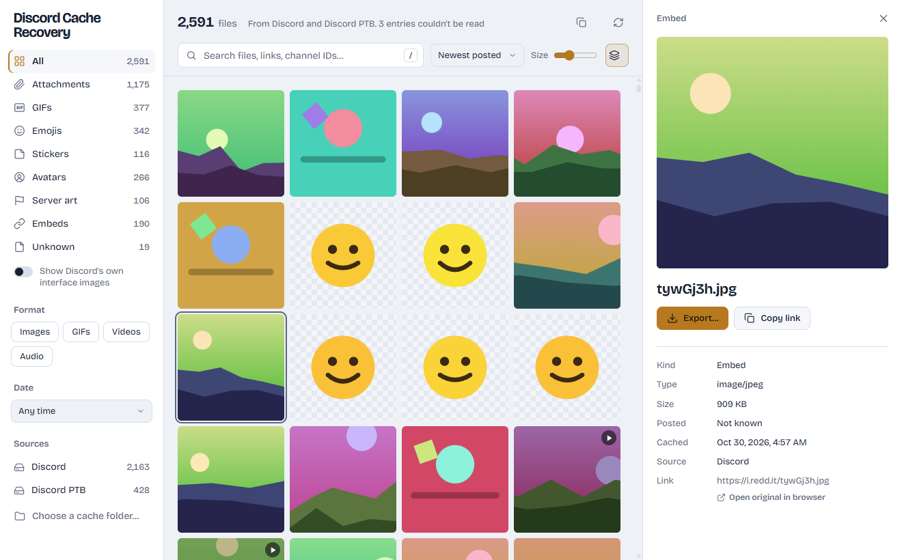

Your lost Discord media is probably still on your computer
Discord keeps a copy of the images, GIFs and videos you've seen. This app finds that copy and gives the files back, with their original names, links and dates.
- Free and open source
- Works offline
- Never touches your account
Everything in one searchable gallery
Scroll through what Discord saved, open any file for its details, and export the ones you want.


- Searchby file name, link or channel ID.
- Sort by kindattachments, GIFs, emojis, stickers, avatars and more.
- Group sizesDiscord saves one image at several sizes; this keeps the largest.
- Real detailsthe original link, when it was posted and when Discord downloaded it.
- Every installDiscord, PTB, Canary and Development, or a cache folder you copied.
What it can find
Anything Discord downloaded to show you, as long as it's still in the cache. That includes files from deleted messages and GIFs whose links no longer work.
| Item | Kind | What you get back |
|---|---|---|
| 1 | Attachments | The original file name, the date it was posted and the channel ID |
| 2 | GIFs from Tenor and Giphy | The GIF and the link it came from |
| 3 | Emojis and stickers | Including ones from servers you've left |
| 4 | Avatars, server icons and banners | Profile pictures and server art you've seen |
| 5 | Link previews | Embedded images, with the original source link |
Names, links and dates
Every file shows the link it was downloaded from and when your Discord saved it. Attachments also get their real file name and posting date.
Find things fast
Search by name, link or channel ID, then filter by kind, format, date or Discord install. Give channels your own names to search by them.
Export with names intact
Save one file or a whole selection to any folder. Exported files keep their original name and date.
Quick on big caches
Thousands of cached files are scanned in seconds, because it never reads whole files to sort them.
Safe by design: it never goes online
The app only reads files Discord already stored on your computer. Nothing crosses the line below.
No login, no token
It never asks for your Discord account and never uses it, so there's nothing for Discord to flag.
Fully offline
It makes no network requests at all. It doesn't talk to Discord's servers or anyone else's.
Read-only
It never modifies or deletes anything in Discord's folders. Exports are copies.
Open source
Every line is public on GitHub under the MIT license, so anyone can check what it does.
How it works
Discord is built on Chromium, so it keeps an ordinary browser cache on your disk. The app reads it the way Fig. 1 shows.
Finds the cache
It looks in the usual places for Discord, PTB, Canary and Development (including Flatpak and Snap on Linux), or in any folder you point it at.
Reads the index
Each saved file has an entry with the link it came from and when it was saved. Attachment links contain an ID that encodes the posting date.
Sorts and labels
The first few bytes reveal the file type, the link reveals the kind (attachment, GIF, emoji and so on), and copies at different sizes are grouped.
The honest limit: it can only recover what's still cached. Discord removes old entries as the cache fills up, and clearing the cache deletes everything.
Download
Free for Windows, macOS and Linux.
Windows says "Windows protected your PC"
The builds aren't code-signed, which costs money every year for a free project. Click More info, then Run anyway.
macOS says the app is "damaged"
It isn't; macOS says this about unsigned apps. Open Terminal and run this once:
xattr -cr "/Applications/Discord Cache Recovery.app"Questions
Can this get my Discord account banned?
No. It never logs in, never uses your account or token, and never talks to Discord's servers. Discord has no way of seeing it, because it only reads files that are already on your computer.
Is it a virus? Windows warned me about it.
The warning appears because the builds aren't code-signed, not because anything was detected. The full source code is public on GitHub, and every release is built from it automatically. Click More info, then Run anyway.
Why can't I find my GIF?
It can only recover what's still in the cache. Discord removes older entries as the cache fills up, and clearing the cache deletes everything. If you saw the GIF recently on this computer, try searching for part of its link or filtering to GIFs.
Can it tell which server something came from?
Not directly; the cache doesn't record servers or which favorite-GIF tab something was in. Attachments do include the channel ID, and you can give channels your own names to search by them.
Do I need to close Discord first?
Sometimes, on Windows. If the app says the cache is locked, quit Discord fully from the tray icon (right-click, then Quit Discord) and scan again. On macOS and Linux it can usually scan while Discord is open.
My Mac says the app is "damaged". What now?
That's macOS's message for unsigned apps. Run xattr -cr "/Applications/Discord Cache Recovery.app" in Terminal once, then open it normally.